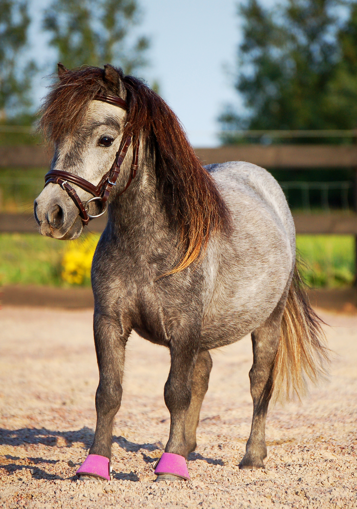

➡ Jag tror att alla framgångsrika ryttare och tränare har minst en ponny att tacka för sin framgång. Jag minns iallafall min första ponnykärlek. Pricken hette han.
Pricken = en klotrund ponny som liksom namnet antyder hade stubbman och bruna prickar över hela kroppen. Jag lärde mig att borsta och sköta om en häst tack vare Pricken. Jag lärde mig att rida på Pricken. Och jag vet att jag bara var ett av alla de barn på ridskolan som har just Pricken att tacka för allt jag kan och vet idag.
”Hylla ponnyn. Tacka ponnyn. Älska ponnyn.”
Efter Pricken och min tid på ridskolan ville jag bli en dressyrryttare och sysslade bara med stora hästar i flera år. Jag hade travare, fullblod, varmblod, ston, hingstar och valacker i alla åldrar. Men en liten röst i mitt huvud växte sig större och starkare tills den inte gick att tysta mer. Rösten sa att något fattades i mitt liv. Det var som att en pusselbit saknades och jag kände mig aldrig riktigt nöjd med något jag gjorde. En dag tog rösten över och det slutade på något konstigt vis med att vi körde 14 timmar tur-retur för att hämta hem en häst jag bara hade sett tre bilder på. Kan ni gissa vem det var? Ja, ni har helt rätt – det var Alvin! Efter att ha lämnat ponnytiden bakom mig hade jag nu gjort en helomvändning och dykt med huvudet före ner i ponnyvärlden igen. Folk undrade hur jag kunde gå från att ha en smäcker dressyrhingst till att ha en rufsig minishettis. ”Vad ska man göra med en sådan liten sak?”. Folk tyckte att det hade varit billigare för mig att bara köpa en gräsklippare och skrattade åt oss.
Jag vill tacka ponnyn som tar emot godis från en barnhand så försiktigt det bara går. Ponnyn som står blickstilla medan vi lär oss att göra flätor i manen. Ponnyn som bär oss när vi upplever våra första steg från hästryggen. Ponnyn som travar över vårt första paulinas hinder. Ponnyn vars päls vi gråter ut i när vi är ledsna. Ponnyn som bockar av oss första gången vi ska galoppera. Ponnyn som trycker sitt huvud i vår famn när vi behöver en kram.
Ponnyer må vara små, men de har enorma personligheter och förtjänar att behandlas med kärlek och respekt. Det jag egentligen vill säga är att du inte behöver gå över till stor häst bara för att du har blivit för stor för att rida på ponnyer. Jag kör vagn, jobbar med trickträning och dressyr från marken med mina ponnyer och vi har aldrig en tråkig stund tillsammans. Hylla ponnyn. Tacka ponnyn. Älska ponnyn. Utan ponnyn hade vi inte varit där vi är idag! När jag skaffade Alvin kände jag mig ganska ensam som ponnyägare i vuxen ålder men det gör mig väldigt glad att se att så många fler har upptäckt hur roligt och givande det är att ha ponnyer nu. Allt jag hoppas är att jag och Alvin kanske har haft ett litet finger med i spelet och har inspirerat andra till att satsa på ponny!
Nu har rufsiga paulinas Alvin varit på Falsterbo Horse Show, uppträtt i Flyinge och blivit inbjuden att medverka i flera TV-program. Jag är så stolt över hur långt vi har kommit men också över att jag struntade i vad alla sa och bara följde mitt hjärta!
